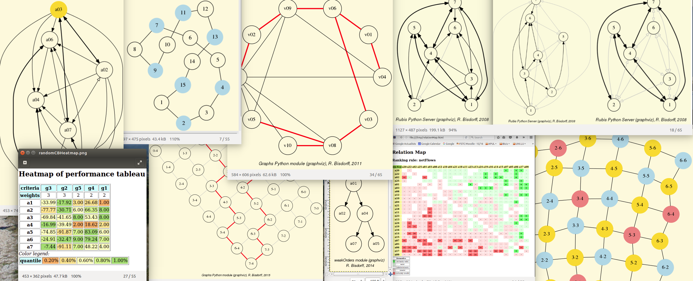

Documentation of the Digraph3 resources¶
| Author: | Raymond Bisdorff, University of Luxembourg FSTC - CSC/ILIAS |
|---|---|
| Version: | Revision: Python 3.5 |
| Copyright: | R. Bisdorff 2013-20157 |
Introduction¶
This documentation describes the Python3 resources for implementing decision aid algorithms in the context of a bipolarly-valued outranking approach ([1], [2]). These computing resources are useful in the field of Algorithmic Decision Theory and more specifically in outranking based Multiple Criteria Decision Aid (MCDA).
{kind=link}

Parts of the documentation:
- Tutorials of the Digraph3 resources
- Working with the Digraph3 software ressources
- Manipulating
Digraphobjects - Working with the
graphsmodule - Computing the winner of an election
- Working with the
outrankingDigraphsmodule - Generating random performance tableaux
- Computing a best choice recommendation
- Ranking with multiple incommensurable criteria
- Links and appendices
- Technical Reference of the Digraph3 modules
- Installation
- digraphs module
- randomDigraphs module
- graphs module
- perfTabs module
- randomPerfTabs module
- outrankingDigraphs module
- sparseOutrankingDigraphs module
- sortingDigraphs module
- votingDigraphs module
- linearOrders module
- weakOrders module
- randomNumbers module
- digraphsTools module
- arithmetics module
- Indices and tables
- Tutorials
Indices and tables¶
References¶
| [1] |
|
| [2] |
|
See Copyright